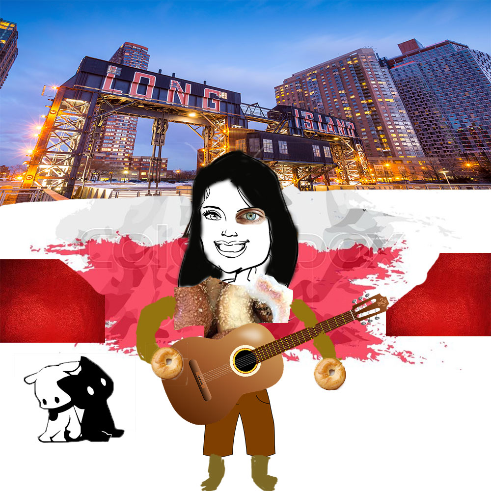

Poem
A bagel also spelled BEIGEL, is a bread product from Jewish communities in Poland. Your dog's online manual contains articles on the breed, selection, training, grooming and care of dogs and puppies. Queens is the easternmost and widest of the five boroughs of New York City. Evelyn is a noun in English, where it can be used as a first or last name. Guitar Center is the largest retailer of musical instruments in the world.